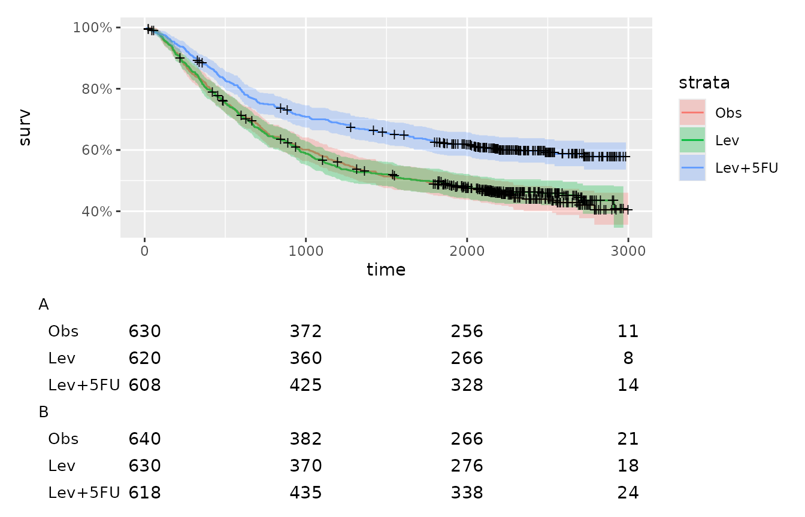
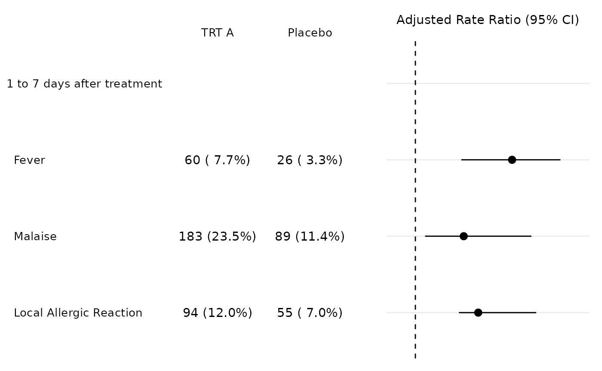

library(tfrmt)
library(dplyr)
library(tidyr)
library(patchwork)
library(survival)
library(ggfortify)Print to ggplot outputs a ggplot table. This table can then be added to an existing plot to provide additional information. For this we recommend the use of the patchwork package.
Surival analysis example
A common use case of this function could be in the production of survival plots. The following code sets up a Kaplan Meier plot using the colon data from the survival package.
# Set up survival data
fit <- survfit(Surv(time,status)~rx, data=colon)
# Plot kaplan meier between times 0-3000
km_plot<-autoplot(fit)+
xlim(c(0,3000))As with print_to_gt, print_to_ggplot requires an input table with label, value,param and column variables. The following code sets up our mock input table.
risk<-tibble(time=c(rep(c(0,1000,2000,3000),3)),
label=c(rep("Obs",4),rep("Lev",4),rep("Lev+5FU",4)),
value=c(630,372,256,11,620,360,266,8,608,425,328,14),
param=rep("n",12))A tfrmt object is required to specify the formatting of the ggplot table. This can then be piped out to print_to_ggplot as seen below.
table <-tfrmt(
# specify columns in the data
label = label ,
column = time,
param = param,
values = value,
body_plan = body_plan(
frmt_structure(group_val = ".default", label_val = ".default",
frmt("X"))
)) %>%
print_to_ggplot(risk)
tableNow using the patchwork package we can combine the original plot, and our ggplot table. Since we want the table below the plot, we use /. For more information on using patchwork, refer to the documentation here
km_plot/table
Because we don’t have to duplicate the time points, we can just remove the x-axis labels using the theme
table2 <- table +
theme(axis.text.x = NULL)
km_plot/table2
#> Warning: Removed 16 row(s) containing missing values (geom_path).
#> Warning: Removed 16 rows containing missing values (geom_point).
Using grouping
You can also apply groups to your ggplot table. The code below adds groupings to the risk table above for a mock example.
riska<- risk %>%
mutate(group="A")
riskb<- risk %>%
mutate(group="B",
value=value+10)
risk_group<-riska %>%
rbind(riskb)Now we need to add group to our tfrmt specification and patch together:
group_table<-tfrmt(
# specify columns in the data
group = group,
label = label ,
column = time,
param = param,
values = value,
body_plan = body_plan(
frmt_structure(group_val = ".default", label_val = ".default",
frmt("X"))
)) %>%
print_to_ggplot(risk_group) +
theme(axis.text.x = NULL)
km_plot/group_table ## Forest Plots
The same logic used in the survival plots can also be used to create forest plots, but instead of stacking the plots we will just put them side by side. First we can make the table using print_to_ggplot.
aes <- factor(c("Fever", "Malaise", "Local Allergic Reaction"),
levels = c("Fever", "Malaise", "Local Allergic Reaction"))
tbl_dat <- tibble(
grp = "1 to 7 days after treatment",
ae = rep(aes, each = 4),
trt = rep(rep(c("TRT A", "Placebo"), each = 2), 3),
param = rep(c("n", "pct"), 6),
value = c(60, 7.7, 26, 3.3, 183, 23.5, 89, 11.4, 94, 12, 55, 7)
)
tbl_p <- tfrmt_n_pct() %>%
tfrmt(label = ae,
group = grp,
column = trt,
param = param,
values = "value") %>%
print_to_ggplot(tbl_dat)
tbl_p
Next we need to plot the rate ratios. This plot requires a bit more finessing because we need to remove the y-axis label so it can be combined with the table plot. Also we need to add a row in the data for the group value to make the plots match up correctly.
plot_dat <- tibble(
ae = aes,
mean = c(3, 2.3, 2),
lower = c(1.95, 1.9, 1.2),
upper = c(4, 3.5, 3.4)
) %>%
bind_rows(c(ae = "1 to 7 days after treatment"))
plot_p <- ggplot(data=plot_dat, aes(x=ae, y=mean, ymin=lower, ymax=upper)) +
geom_pointrange() +
geom_hline(yintercept=1, lty=2) + # add a dotted line at x=1 after flip
coord_flip() +
xlab("") +
ylab("Adjusted Rate Ratio (95% CI)")+
scale_x_discrete(limits=rev)+
scale_y_discrete(position = "right") +
theme_minimal() +
theme(axis.text.y=element_blank(), #remove x axis labels
axis.ticks.y=element_blank())
plot_p
#> Warning: Removed 1 rows containing missing values (geom_pointrange).
Now thanks to patchwork combining the two plots is relatively easy.
tbl_p + plot_p
#> Warning: Removed 1 rows containing missing values (geom_pointrange).
Table Styling
A final note about the ggplot tables. Most styling can be adjusted with theme once the table is create. But, the table body needs to be adjusted in the print_to_ggplot call, by supplying the requirements to the .... So if you need to change the size table boy you just add that to the print_to_ggplot.
tfrmt_n_pct() %>%
tfrmt(label = ae,
group = grp,
column = trt,
param = param,
values = "value") %>%
print_to_ggplot(tbl_dat, size = 8)